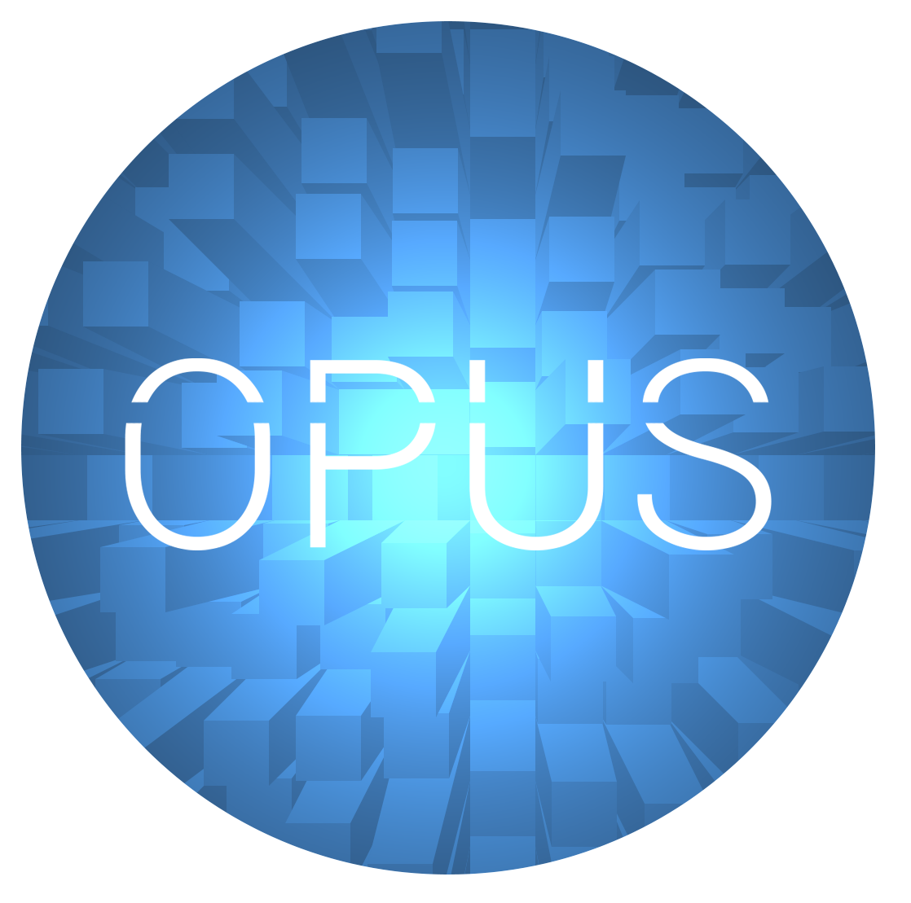

<link rel="import" href="../../../bower_components/polymer/polymer.html">
<link rel="import" href="../../../bower_components/paper-shadow/paper-shadow.html">
<link rel="import" href="../../../bower_components/paper-fab/paper-fab.html">

<polymer-element name="logo-description" attributes="">
  <template>
    <link rel="stylesheet" href="../../../bower_components/bootstrap/dist/css/bootstrap-theme.min.css">
    <link rel="stylesheet" href="../../../bower_components/bootstrap/dist/css/bootstrap.min.css">
    <paper-shadow>
			<div horizontal layout>
				<div style="width:40%">
					
				</div>
				<div flex vertical layout>
					<div>
						<h1 style="text-align:center;"> OPUS is Latin for <em>work</em>. </h1>
					</div>
					<div>
						<p style="text-align:center;">We are a platform that connects students to suitable job opportunities and allows students to build a
						professional foundation while offering businesses an untapped source of employment. OPUS is a unique
						job marketplace for unemployed, inexperienced youth and businesses lacking the necessary personnel.
						Students will become experienced and accomplished while maintaining the productivity of businesses.</p>
					</div>
					<div flex> </div>
					<div horizontal layout>
						<div flex> </div>
						<div self-center style="margin-right:20px;">
							<small> get started </small>
						</div>
						<div self-end>
							<a href="">
								<paper-fab icon="arrow-forward"> </paper-fab>
							</a>
						</div>
					</div>
				</div>
			</div>
		</paper-shadow>
  </template>
  <script>
    (function () {
      Polymer({
        // define element prototype here
      });
    })();
  </script>
</polymer-element>
